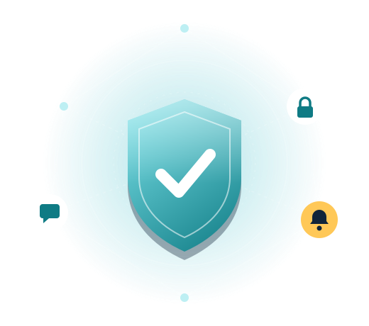

Mensajes hirientes
Insultos, amenazas o burlas por chat, comentarios o mensajes directos.
Un lugar del colegio para entender el ciberacoso, saber qué hacer y pedir ayuda sin sentirte solo o juzgado.

Es el maltrato repetido hacia una persona usando celulares, redes sociales, juegos en línea o mensajería. A diferencia del acoso presencial, puede llegar a toda hora y ser visto por muchas personas.
Insultos, amenazas o burlas por chat, comentarios o mensajes directos.
Compartir fotos, videos, capturas o rumores sin permiso para humillar.
Sacar a alguien de grupos, ignorarlo a propósito o crear grupos para hablar mal de él o ella.
Crear perfiles falsos o usar la cuenta de otra persona para dejarla mal.
Ataques, apodos o persecución constante dentro de videojuegos en línea.
Amenazar con publicar algo si la persona no hace lo que le piden. Esto es grave: pide ayuda de inmediato.
Elige tu situación y mira los pasos.
Tu reporte lo recibe el equipo de convivencia y orientación del colegio. Cuenta solo lo que te sientas cómodo compartiendo.
Protección de niños, niñas y adolescentes. Gratuita y disponible todo el día.
Emergencias. Úsala si hay peligro inmediato.
Reporta contenido que dañe a menores de edad en teprotejo.org.
Denuncia delitos informáticos en caivirtual.policia.gov.co.
Apoyo emocional en salud mental, también para adolescentes.
Correo Pendiente